Atualização 07|02|2019
OMEP
BR/RS/Santa Maria
Fale com a presidente:
Whatsapp (55)99933.5637
e-mail:
omepsm@gmail.com
Edital de Convocação para Assembleia
Acesse aquiCursos e Eventos
Adquira seu livro através do email omepsm@gmail. com ou do whatsapp (55) 99933 5637.
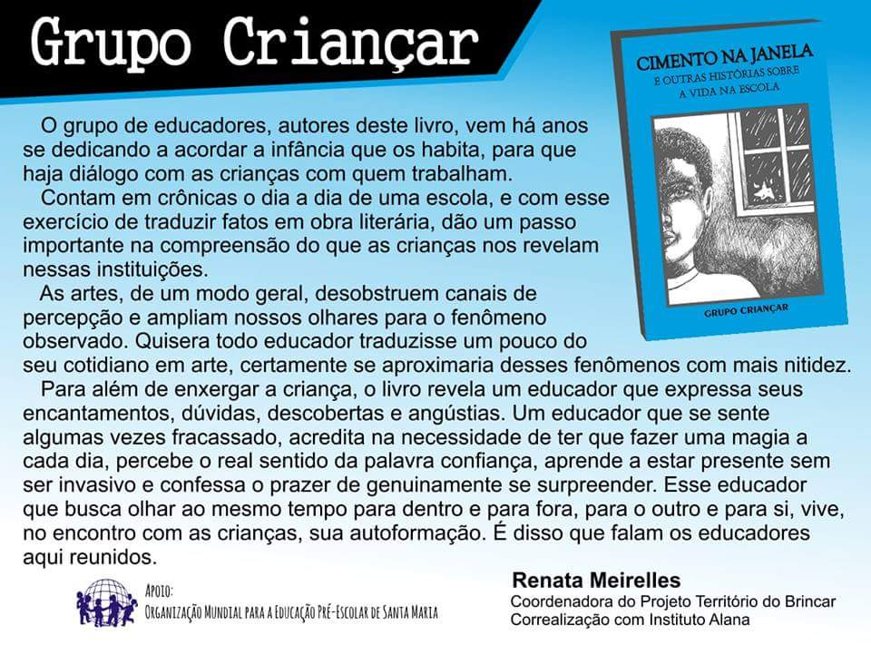
Histórico
OMEP Santa Maria
A pioneira no interior do Rio Grande do Sul
Data de criação
18 de dezembro de 1981
Entidade de Utilidade Pública Municipal Lei Municipal nº - 2827/86 de 15/12/1986 CNPJ Nº 90.323.551/0001 - 89
Membro do Conselho Municipal dos Direitos da Criança e do Adolescente Desde 1993, com Registro nº 38 de 14/10/1998
Conselho Nacional de Assistência Social - CNAS Registro - Processo 23002.0055/87-50 - em 30/08/88 Recadastramento - Processo 44006.001678/97-11 - Diário Oficial da União de 16/09/99
Membro do Conselho Municipal de Assistência Social Certificado de inscrição nº 057 de 06/11/2000
Empreendedor Cultural Registro de Cadastro Municipal nº 021 de 25/10/2000
Aspectos históricos
Criação
A criação de uma Associação da OMEP em Santa Maria concretizou o desejo de participação associativa de um grupo de pessoas que reconhecia a importância da infância e da educação pré-escolar. Para tanto, foram fundamentais o propósito de interiorização da OMEP/Rio Grande do Sul e a atuação de instituições educacionais da cidade, quanto à formação de professores da criança de zero a seis anos. Destacam-se o trabalho precursor do Instituto Estadual de Educação Olavo Bilac (1962 a 1971 e 1976) e do Colégio Centenário e do Centro de Educação da Universidade Federal de Santa Maria (final dos anos 70 e início dos 80), como promotores de ações que, direta ou indiretamente, ensejaram a criação da OMEP/Santa Maria.
Principais realizações
Cursos e outros eventos
Tendo como prioridade a defesa do direito constitucional da criança de ter acesso à educação de qualidade, a OMEP/Santa Maria, ao longo de 20 anos, acumulou um patrimônio de ações educativas e comunitárias, constituído de cursos, congressos internacionais, simpósios nacionais, seminários, jornadas estaduais, e encontros, além de palestras, debates e happy hours. Essas realizações trouxeram à Santa Maria conferencistas de renome nacional e internacional, e valorizaram o trabalho de Universidades, das escolas estaduais, municipais e particulares, e de entidades educacionais que atendem à criança pequena, no município e na região.
Entre os eventos, pode-se destacar, pela grande afluência de participantes, o I Congresso de Educação Infantil dos Países do Cone Sul (1988), o 2º Simpósio Nacional de Educação Pré-Escolar (1991), o III Encontro Estadual de Educação Infantil (1994) e o II Congresso Internacional de Educação Infantil do Mercosul (1998).
Defesa dos direitos da criança
Em consonância com a OMEP estadual e nacional, a OMEP/Santa Maria participou do processo de discussão nacional que antecedeu à promulgação da Constituição de 1988 e que resultou no reconhecimento da criança como sujeito de direitos. Ao promover o I Encontro Regional de Educação Pré-Escolar (1984), oportunizou a discussão sobre “Os direitos da família e da criança na sociedade em transformação”, como preparação ao VI Congresso Brasileiro para a Educação Pré-Escolar (Porto Alegre, 1985), do qual decorreu, entre outras ações, a instalação da Comissão Especial sobre a Violência contra a Criança". A seguir, realizou o Encontro Regional sobre os Direitos da Infância e Adolescência (1985), cujo tema foi “Os direitos dos menores e a Constituição”. Em 1987, engajou-se na Campanha "Criança Constituinte", conseguindo aumentar significativamente o número de assinaturas para a Proposta de Emenda Popular em Defesa da Criança e do Adolescente, apresentada à Assembléia Constituinte, através Comissão Nacional "Criança e Constituinte".
Na década de 90, formou um Comitê de Combate à Miséria Infantil (Campanha do Betinho -1993) e o diferenciou, através de ações sócio-educativas, junto a mães de crianças de zero a seis anos, selecionadas segundo critérios que indicavam condições precárias de vida. Desde 1993, é membro do Conselho Municipal dos Direitos da Criança. A partir de 2000 é membro também do Conselho Municipal de Assistência Social.
Voluntariado e outros apoios
Os integrantes da diretoria realizam trabalho sem remuneração, conforme estabelece o Estatuto. Esse grupo, em determinados momentos, recebeu o apoio de professores cedidos, por órgãos públicos de ensino. Atualmente, com a diminuição da possibilidade de cedências, a entidade tem contado com o trabalho de voluntários, principalmente, na organização e realização de eventos. Tanto o setor público como privado têm participado na execução de metas e projetos, através de co-promoção, convênios, acordos, apoios. Acrescente-se o apoio de organizações não governamentais, associações, e de setores do comércio, da indústria e dos serviços da cidade.
Reconhecimento Público
A Secretaria de Município da Educação concedeu à OMEP/Santa Maria o Diploma de Reconhecimento Educacional, em 25 de novembro de 1999.
Publicações
| 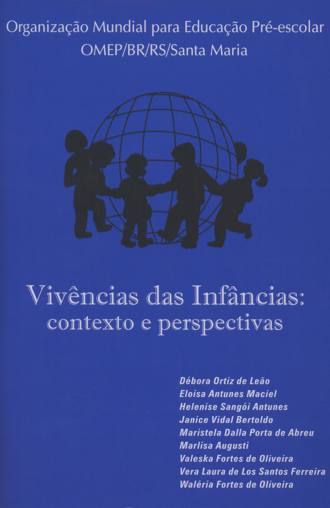 |
Cadernos Temáticos IV - Vivências das Infâncias Débora Ortiz de Leão, Eloisa Antunes Maciel, Helenise Sangói Antunes, Janice Vidal Bertoldo, Maristela Dalla Porta de Abreu, Marlisa Augusti, Valeska Fortes de Oliveira, Vera Laura de Los Santos Ferreira, Waléria Fortes de Oliveira. Santa Maria: Pallotti, 2005. 111 Páginas - R$ 12,00 |
| 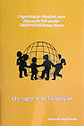 |
Cadernos Temáticos III - Os Jogos e as Ludotecas Raimundo Angel Dinello. Santa Maria: Gráfica Editora Pallotti, 2004. 94 Páginas - R$ 10,00 |
| 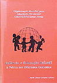 |
Cadernos Temáticos II - Infância e Educação Infantil: A Prática em diferentes contextos Maria Tereza González Cúberes. Santa Maria: Gráfica Editora Pallotti, 2003. 48 Páginas - R$ >8,00 |
|
Cadernos Temáticos I - Infância e Educação Infantil: Reflexões sobre a Teoria na Prática Maria Tereza González Cúberes. Santa Maria: Gráfica Editora Pallotti, 2002. 48 Páginas - R$ 8,00 |
|
| 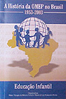 |
A História da OMEP no Brasil - (1953/2003) - Educação Infantil Organizadoras: Maria Olympia da Silveira Ferreira e Maria da Luz Fernandes Perim. Rio de Janeiro: Ravil Editora, 2003. 216 Páginas - R$ 15,00 |
| 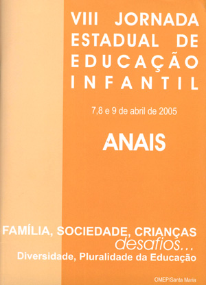 |
VIII Jornada Estadual de Educação Infantil Anais. 62 Páginas - R$ 5,00 |
| 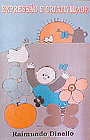 |
Expressão e Criatividade - novo paradigma em educação e para o ensino Raimundo Angel Dinello, 2ª edição, Montevidéo, 1998. Impressão Gráficos del Sur. Páginas - R$ 12,00 |
| 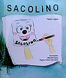 |
Sacolino Tânia Lopes, 2ª edição. Santa Maria: Gráfica Editora Pallotti, 2004. Parceria OMEP/SM e Usina Bigger. Segundo a autora Tânia Lopes, Sacolino ajudará aos profissionais que trabalham com a educação infantil colocar as seguintes temáticas: ecologia, respeito ao meio ambiente, reciclagem, estimulando as artes plásticas na confecção de fantoches, introdução de temas como identidade e valorização do ser humano, auto-estima, a importância de cada um ser e fazer a sua própria história, via que ele servirá também para interagir como um ser social, visando o melhoramento de toda a sociedade, através de aulas para professores(as) 20 Páginas - R$ 10,00 |
| 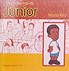 |
Os problemas de Júnior Maria Rita Py Dutra. 1ª edição. Santa Maria: 2003. Capa e Projeto gráfico Usina Bigger. Este livro trabalha a questão do racismo entre as crianças pequenas. 12 Páginas - Esgotado |
| 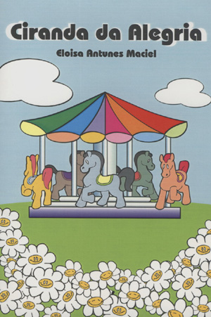 |
Ciranda da Alegria Eloisa Antunes Maciel. Rio de Janeiro: Litteris Ed. Quártica, 2006. 24 Páginas R$ 8,00 |
| 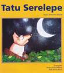 |
Tatu Serelepe Eloisa Antunes Maciel. Ilustrações de Alisson Ortiz Affonso e Kelly Maria Abreu. Literatura Infantil. OMEP/Santa Maria, Usina Bigger. Santa Maria: Pallotti 2005. 12 Páginas - R$ 8,00 |

|
A Turma de Layla Maria Rita. Ilustrações de Tui. Coleção História da Vó Preta. Santa Maria: Multipress, 2005. 20 Páginas - R$ 10,00 |

|
Dia dos Negros Maria Rita. Ilustrações de Tui. Coleção História da Vó Preta. Santa Maria: Multipress, 2005. 24 Páginas - R$ 10,00 |

|
O Sonho de Jamila Maria Rita. Ilustrações de Tui. Coleção História da Vó Preta. Santa Maria: Multipress, 2005. 28 Páginas - R$ 10,00 |
| 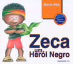 |
Zeca - Um herói negro Maria Rita. Ilustrações de Tui. Coleção História da Vó Preta. Santa Maria: Multipress, 2008. 24 Páginas - R$ 10,00 |

|
Artur o Lagarto em: Não quero ser... GRANDE! História e ilustração de Adriano Edo Neuenfeldt. Literatura Infantil. Santa Maria: 2009. A história trata da vida de duas personagens que não se aceitam como são pelas dificuldades que enfrentam no dia a dia: Artur, o lagarto, por ser muito grande e a joaninha, por ser muito pequena. Durante o enredo, Artur persegue a joaninha, e nessa seguição, acaba perdendo seu rabo. A joaninha vê nisso uma ótima oportunidade para se aproveitar da situação, prometendo ajudá-lo a recuperar a cauda. O livro procura abordar temas como a insatisfação pessoal com o corpo e o “levar vantagem” sobre a ignorância alheia. 30 Páginas - R$ 10,00 |

|
Onde é o meu lugar? História e ilustração de Adriano Edo Neuenfeldt. Literatura Infantil. Santa Maria: 2009. A história trata da vida de um gafanhoto que nascera com uma pata a menos e de toda a sua decepção e tristeza diante do mundo. Durante o enredo, ele encontra um pássaro com quem estabelece uma amizade, este, por sua vez, procura auxiliá-lo na busca de sua autoconfiança e superação das dificuldades. No final, o livro oferece algumas atividades, entre elas a possibilidade do leitor de criar a sua própria história a partir de figuras relativas à história e a confecção de personagens e jogos observando algumas noções matemáticas. O livro questiona o esforço que a personagem faz diante dos desafios. 26 Páginas - R$ 10,00 |

|
A pipa que queria aprender a voar? História e ilustração de Adriano Edo Neuenfeldt. Literatura Infantil. Santa Maria: 2009. A história trata do esforço de uma pipa para conseguir voar. Para que ela consiga isso ela recebe a ajuda de outras personagens que procuram incentivá-la a cada nova tentativa frustrada. O livro procura abordar alguns temas como a força de vontade, a autoconfiança, a perseverança, a amizade e medo. As figuras que compõem a capa podem ser recortadas e coladas nos espaços que o leitor achar conveniente. Assim o leitor começa a interagir com a obra. No final, o livro oferece algumas atividades, entre elas a possibilidade do leitor de criar a sua própria história a partir de figuras relativas ao enredo e a confecção de uma pipa observando algumas noções matemáticas. 20 Páginas - R$ 10,00 |

|
João, o Leão: com medo de água? Este livro trabalha com questões relacionadas à água. João, o leão, aprende com o seu amigo elefante a perder esse medo e a perceber os benefícios que ela proporciona. História e ilustração de Adriano Edo Neuenfeldt. Literatura Infantil. |

|
O sapo Durval em: Onde fica omundo? Este livro conta a história de Durval, um sapo que vivia tranqüilo na sua lagoa até que um dia resolve descobrir “onde fica o mundo?" A partir disso ele sai da lagoa em busca da sua resposta. História e ilustração de Adriano Edo Neuenfeldt. Literatura Infantil. |

|
A história do Copinho. Este livro procura abordar a questão da reutilização de materiais. Apresenta toda a trajetória de um copinho, desde o supermercado até a transformação num boneco. História e ilustração de Adriano Edo Neuenfeldt. Literatura Infantil. |

|
A peteca sapecca! Quem ainda não teve alguma caixa onde guardava brinquedos? E quantos ali ficavam esquecidos? Nessa história você encontrará pequenos versos que tratam desta temática. E também encontrará uma proposta de construção de uma peteca, de um fantoche e a possibilidade de um jogo. História e ilustração de Adriano Edo Neuenfeldt. Literatura Infantil. |

|
Edevar, O Perequito impaciente Nessa história você conhecerá as aventuras de Edevar, um periquito muito sapeca e impaciente. Também aprenderá a confeccionar as personagens desta aventura, além de refletir sobre os diferentes caminhos que podemos tomar e a impaciência. História e ilustração de Adriano Edo Neuenfeldt. Literatura Infantil. |

|
Sou diferente A história se passa em um lugar muito distante, só que este lugar era diferente, lá só existiam círculos... Todos e tudo tinha formato circular! Até que um dia, nasceu um quadrado! Nesta obra você encontrará uma discussão sobre a diferença e o preconceito, além da confecção de personagens e do uso da geometria. História e ilustração de Adriano Edo Neuenfeldt. Literatura Infantil. |
Se você quiser adquirir alguma das nossas publicações, solicite através do e-mail omepsm@gmail.com ou ligue para (55) 9933-5637
Fale Conosco
Envie a sua mensagem
Envie seu email para o endreço: omepsm@gmail.com